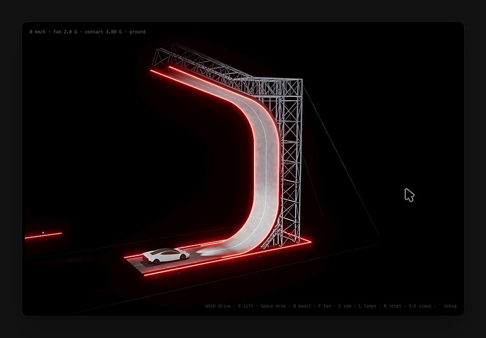

AI 日报 · 10月18日
把 Agent 放进企业自己的边界
Replit 推出将开发平台或应用部署进客户云的不同选项；Claude Code 团队公开分层代码审查流程。Builder 同时在探索自动审查、演示制作与交付控制，真正的关键是哪些决策仍需人承担。
自带云部署
代码审查
人工监督
Agent 工作流
5
Builder 动态
4
今日上榜项目
4
官方原始来源
1
公开视频
今日要点
Replit 让企业选择运行边界
10 月 16 日官方公布三档 Bring Your Own Cloud：完整平台与应用运行在客户云、仅发布应用运行在客户云，或导出镜像和部署文件自行托管。完整方案处于企业私有预览，其余两项为早期访问，不能写成已全面开放。
Claude Code 团队把人工复核按风险分层
团队文章描述先由模型自检和自动审查，再对普通与高风险改动分别要求一人或两人批准；回滚率与事故率是减轻人工审查的约束指标。流程与数字来自 Anthropic 自身实践，不能直接推广为行业结果。
深度对话
Greg Brockman 谈 AI 发现与安全支出
No Priors 10 月 15 日访问 OpenAI 总裁 Greg Brockman。以下是他在节目中的判断与案例，不把预测或未经独立审计的数字当作行业定论。
数学成果与生物数据的差别
Brockman 认为数学任务能更快从模型进步获益；转向药物研发时，实验数据、湿实验和监管流程是不同性质的瓶颈。
软件更易生产，安全更难省略
他预期软件生成成本下降后，可靠性和防御能力会决定价值，并主张安全投入应大幅增加。这是受访者观点，不是支出预测。
人仍要能理解并监督
访谈讨论让模型给出可供人检查的证据与解释，而非只交付结论。
资讯精选
官方原文速览
OpenAI｜金融团队保留长时间人工审核
Benefit Street Partners 案例称，首轮信贷协议分析可约 20 分钟完成，随后仍需一小时以上人工复核；时间来自客户案例陈述。
Anthropic｜Slides 已纳入 Artifacts
帮助中心说明 Docs、Slides 与 Design 模板已在各 Claude 计划中提供；企业管理员仍可控制启用状态。与 Google Slides 连接器是不同功能。
Builder 动态
从创作速度转向交付与监督
Amjad Masad｜Replit 进入客户自己的云
Replit CEO 指向 BYOC 发布，强调政府、金融与医疗等高要求场景中的数据控制。实际可选范围仍以官方三档方案及预览状态为准。
Boris Cherny｜代码审查成为团队工作流
Boris 说 Claude Code Review 已运行在他所有 PR 上，常能在合并前发现问题。这是个人经验陈述；团队文章提供了审查层级与人工批准的更完整上下文。
Thibault Sottiaux｜团队新增幻灯片支持
OpenAI 产品负责人称团队刚加入幻灯片支持，目前面向 Pro、Business 和 Enterprise 用户收集反馈；原帖未详述具体入口与使用效果。
Dan Shipper｜下一步瓶颈是编辑与监督
Every CEO 认为生成已廉价且质量提高，产品接下来的能力跃迁应在编辑与监督。此为其判断，呼应企业部署后的验收问题。
Guillermo Rauch｜把发布会演示改成交互模拟
Vercel CEO 展示可玩的 Roadster 演示模拟。原帖视频展示的是单个作品，不能由此推断已发布通用转换工具。

GitHub Trending
今日榜单的四个项目


按 10 月 18 日 GitHub Trending 实时榜单筛选；星标、分叉和语言取自本次 GitHub API 快照，随后会变化。避开前两期重点项目；功能按仓库自述概括。
今日思考
今天的材料来自不同层面：Replit 在部署位置上给企业更多选择，Claude Code 团队把代码审查做成分层流程，Brockman 在访谈里讨论人类监督和安全投入。云边界、代码检查与最终责任不会自动由同一种工具解决。今日一问：团队交付一个 Agent 产物时，谁核对数据边界、谁批准高风险变更、谁负责撤回？
参考来源
Replit｜Bring Your Own Cloud
Claude Code 团队｜代码审查流程
OpenAI｜Benefit Street Partners 案例
Claude 帮助中心｜Artifacts 与 Slides
No Priors｜Greg Brockman 原频道视频
Amjad Masad｜自带云
Boris Cherny｜代码审查
Thibault Sottiaux｜幻灯片
Dan Shipper｜编辑与监督
Guillermo Rauch｜交互模拟
GitHub｜10 月 18 日 Trending
MadsLorentzen/ai-job-search
akitaonrails/ai-memory
stablyai/orca
xerj-org/xerj